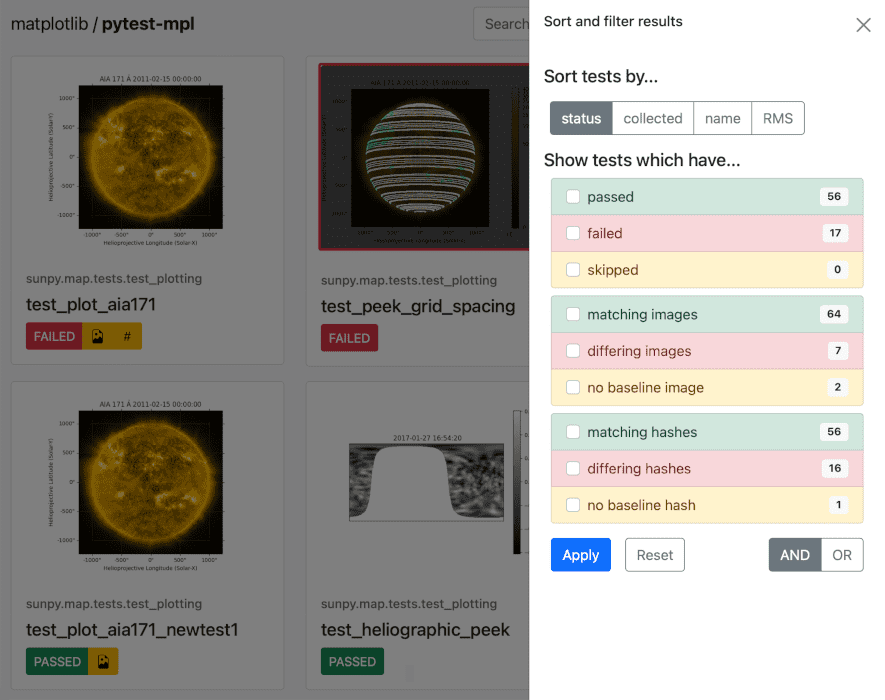

Summary Reports#
Generating a Test Summary#
By specifying the --mpl-generate-summary=html CLI argument, a HTML summary
page will be generated showing the test result, log entry and generated result
image. When in the (default) image comparison mode, the baseline image, diff
image and RMS (if any), and tolerance of each test will also be shown.
When in the hash comparison mode, the baseline hash and result hash will
also be shown. When in hybrid mode, all of these are included.
When generating a HTML summary, the --mpl-results-always option is
automatically applied (see section below). Therefore images for passing
tests will also be shown.
|
 |
|


As well as html, basic-html can be specified for an alternative HTML
summary which does not rely on JavaScript or external resources. A json
summary can also be saved. Multiple options can be specified comma-separated.
pytest --mpl --mpl-hash-library=mpl35_ft261.json --mpl-baseline-path=baseline --mpl-results-path=results --mpl-generate-summary=basic-html,json